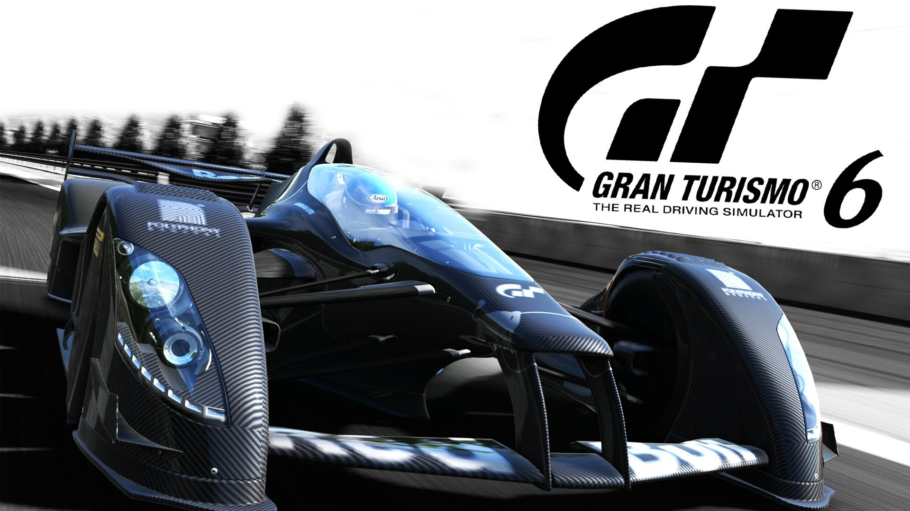
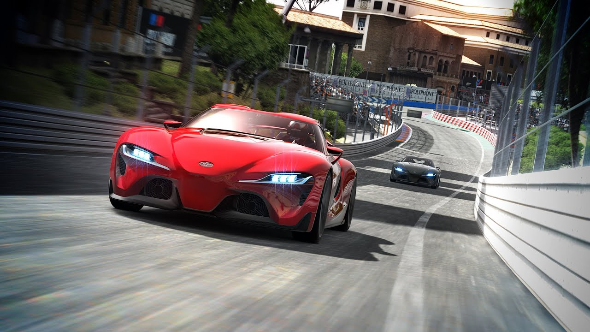

GRAN TURISMO 6
Gran Turismo 6 is a racing video game developed by Polyphony Digital and published by Sony Computer Entertainment for the PlayStation 3. It is the sixth major release and twelfth game overall in the Gran Turismo video game series. It was released worldwide on December 6, 2013. It was met with positive reception and was a financial success. New features included the addition of more cars and tracks, improvements to the car customisation options, and partnerships with the Goodwood Festival of Speed, the Ayrton Senna Institute, the FIA and NASCAR. Gran Turismo 6 is the first game ever to feature officially FIA-certified content.

Development
In November 2011, the Gran Turismo series' creator, Kazunori Yamauchi, said that he and his team at Polyphony Digital were working on Gran Turismo 6. In March 2012, employees were seen on site at Mount Panorama in Bathurst, New South Wales, Australia, photographing and scanning the track. They revealed that Mount Panorama would be included in Gran Turismo 6, making it the first Australian race track to be featured in the series. In February 2013, Sony's Computer Entertainment Europe senior vice president Michael Denny claimed that Gran Turismo 6 would remain a PlayStation 3 title, despite the unveiling of the PlayStation 4.
Gran Turismo 6 was announced on May 15, 2013, when Sony Computer Entertainment Europe hosted a celebration of the 15th anniversary of Gran Turismo at Silverstone Circuit in the United Kingdom. Kazunori Yamauchi said at the official announcement, Gran Turismo 6 will feature 71 layouts of 33 tracks, 1200 cars, a new flexible rendering engine that features adaptive tessellation, and a redesigned simpler menu interface with faster loading times. An early build of Gran Turismo 6's updated physics was shown to the public when GT Academy 2013 was released on the PlayStation Store on July 2 the same year.
Gran Turismo 6 was announced on May 15, 2013, when Sony Computer Entertainment Europe hosted a celebration of the 15th anniversary of Gran Turismo at Silverstone Circuit in the United Kingdom. Kazunori Yamauchi said at the official announcement, Gran Turismo 6 will feature 71 layouts of 33 tracks, 1200 cars, a new flexible rendering engine that features adaptive tessellation, and a redesigned simpler menu interface with faster loading times. An early build of Gran Turismo 6's updated physics was shown to the public when GT Academy 2013 was released on the PlayStation Store on July 2 the same year.
Gameplay trailer